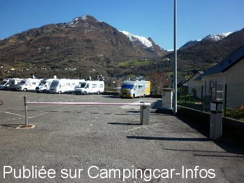
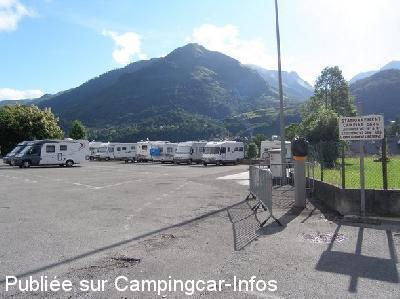
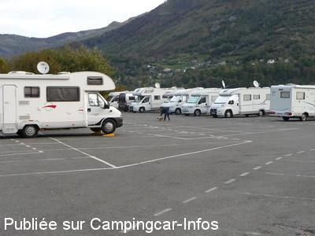

ASN = Aire de services avec stationnement nuit possible de :
LARUNS
(N° 493)
Accès/adresse :
Avenue de la Gare, D934
64440 LARUNS
64440 LARUNS
Latitude : (Nord) 42.98845° Décimaux ou 42° 59′ 18′′
Longitude : (Ouest) -0.42511° Décimaux ou 0° 25′ 30′′
Tarif : 2016
Stationnement, services : 6 € /24 h
Paiement par carte bancaire
Type de borne : EURO-RELAIS
Services :


Tous commerces
Autres informations :
Ouvert toute l'année
22 emplacements goudronnés
éclairés, légèrement en pente
De 18 h à 9 h, stationnement sur les emplacements matérialisés
Tel Office du Tourisme : +33(0)559 053 141

Le 27/02/2016 par CLIFORD 33

Le 16/07/2012 par La boulange

Le 07/11/2009 par Xtian74
de
lolo33
le 24/04/2016 :
§ 6 € pour dormir sur un parking bétonné; non merci! En plus, il y a 3 ou 4 autres endroits mentionnés dans la ville comme étant gratuits et à chaque fois le petit panneau stationnement interdit et le mot du maire pour nous "inviter" à aller sur le parking. On a donc fui Laruns pour dormir sur le parking des thermes à Eaux-Chaudes (fermé en cette saison). Vive les petits villages avec de la verdure et un terrain de foot pas loin! Je vous conseille de fuir Laruns...
§ 6 € pour dormir sur un parking bétonné; non merci! En plus, il y a 3 ou 4 autres endroits mentionnés dans la ville comme étant gratuits et à chaque fois le petit panneau stationnement interdit et le mot du maire pour nous "inviter" à aller sur le parking. On a donc fui Laruns pour dormir sur le parking des thermes à Eaux-Chaudes (fermé en cette saison). Vive les petits villages avec de la verdure et un terrain de foot pas loin! Je vous conseille de fuir Laruns...
de
CLIFORD 33
le 27/02/2016 :
passage le 12/13/14/2016 air de camping-car très calme la nuit 6€ avec service centre ville a 100m tout commerces marché le samedi matin piscine COUVERTE a 300m station de ski a 10km (GOURETTE) [navette]merci a la commune de Laruns
(nous reviendrons)
passage le 12/13/14/2016 air de camping-car très calme la nuit 6€ avec service centre ville a 100m tout commerces marché le samedi matin piscine COUVERTE a 300m station de ski a 10km (GOURETTE) [navette]merci a la commune de Laruns
(nous reviendrons)
de
mimi
le 12/07/2015 :
Nuit du 07 juillet 2015. 6 euros payable par CB
une dizaine de CC
quelques resquilleurs à l exterieur de l aire
proche des commerces et je dirai que c est son seul atout ( en fait simple parking cloturé )
Nuit du 07 juillet 2015. 6 euros payable par CB
une dizaine de CC
quelques resquilleurs à l exterieur de l aire
proche des commerces et je dirai que c est son seul atout ( en fait simple parking cloturé )
de
portal
le 30/09/2014 :
sommes passé en fin septembre 2014
aire agréable payante 6 euros service compris
proche centre ville ,nous étions une quinzaine
merci a la ville de laruns
sommes passé en fin septembre 2014
aire agréable payante 6 euros service compris
proche centre ville ,nous étions une quinzaine
merci a la ville de laruns
de
Deneir Antoon
le 26/09/2013 :
12/09/2013
Antoon & Bea
Zeer goed gelegen parking midden in het stadje voor 6€.
Gezien de automaat kapot was hebben wij niets betaald.
Rustig gelegen met alle voorzieningen lozen en toilet gratis;Water tegen betaling van 1€ voor 10 min.(niet beschikbaar wegens defekt automaat)
Goedkope diezel te bekomen in de stad bij een Inter Marché.
12/09/2013
Antoon & Bea
Zeer goed gelegen parking midden in het stadje voor 6€.
Gezien de automaat kapot was hebben wij niets betaald.
Rustig gelegen met alle voorzieningen lozen en toilet gratis;Water tegen betaling van 1€ voor 10 min.(niet beschikbaar wegens defekt automaat)
Goedkope diezel te bekomen in de stad bij een Inter Marché.
de
pivoinerose
le 08/07/2012 :
De passage en juin 2012. Sommes restés deux jours sur cette aire plaisante, bien que légèrement en pente. Les services étaient gratuits. Il est effectivement indiqué qu'il faut quitter les lieux dans la journée, mais une certaine tolérance semble acceptée, tout au moins hors saison. Cela permet de fréquenter les commerces du village ainsi que le marché.
Aire calme..... malgré les cloches.
De passage en juin 2012. Sommes restés deux jours sur cette aire plaisante, bien que légèrement en pente. Les services étaient gratuits. Il est effectivement indiqué qu'il faut quitter les lieux dans la journée, mais une certaine tolérance semble acceptée, tout au moins hors saison. Cela permet de fréquenter les commerces du village ainsi que le marché.
Aire calme..... malgré les cloches.
de
upsa16
le 18/06/2011 :
petite ville trés agréable, une aire propre goudronnée, les services , la montagne tout autour avec les sommets enneigés sous le soleil....mais que demander de plus .merci Laruns nous reviendrons ! Et franchement les cloches à 7h cela n'a rien de dérangeant ....on est en vacances ou retraités ...alors tout va bien !!!
petite ville trés agréable, une aire propre goudronnée, les services , la montagne tout autour avec les sommets enneigés sous le soleil....mais que demander de plus .merci Laruns nous reviendrons ! Et franchement les cloches à 7h cela n'a rien de dérangeant ....on est en vacances ou retraités ...alors tout va bien !!!
de
bernard et annick
le 06/02/2011 :
sommes arretes pour la nuit n'avons pas eu besoin des services.Ville toujours agréable surtout le samedi et son petit marchè avec de trés bons produits.les cloches de l'eglise sonnent toujours à partir de 7h.
sommes arretes pour la nuit n'avons pas eu besoin des services.Ville toujours agréable surtout le samedi et son petit marchè avec de trés bons produits.les cloches de l'eglise sonnent toujours à partir de 7h.
de
Xtian74
le 01/11/2009 :
Coordonnées contrôlées et rectifiées. Sur un grand parking, dont l'arrière est réservé aux CC et qu'il semble devoir quitter avant 9 heures le matin, nous avons passé une nuit tranquille en compagnie d'une bonne vingtaine de CC. Parking éclairé ? Il y a trois puissantes lampes au sommet d'un grand mat, mais nous sommes restés dans le noir. Seraient-elles trop puissantes ces lampes incitant des CCaristes à demander à ne pas être éclairé ? Est-ce par souci d'économie que la mairie n'éclaire pas ou bien est-ce parce qu'un employé oublie d'appuyer sur l'interrupteur ? Donc NON éclairé ! Curieuse également cette obligation de quitter les lieux avant 9 heures le matin ; comment aller s'approvisionner dans les commerces du village ? Certaines boutiques ouvrent à 8 heures voire plus tôt, mais quand même ! Allez Laruns, quelques petits aménagements et ce sera parfait.
Coordonnées contrôlées et rectifiées. Sur un grand parking, dont l'arrière est réservé aux CC et qu'il semble devoir quitter avant 9 heures le matin, nous avons passé une nuit tranquille en compagnie d'une bonne vingtaine de CC. Parking éclairé ? Il y a trois puissantes lampes au sommet d'un grand mat, mais nous sommes restés dans le noir. Seraient-elles trop puissantes ces lampes incitant des CCaristes à demander à ne pas être éclairé ? Est-ce par souci d'économie que la mairie n'éclaire pas ou bien est-ce parce qu'un employé oublie d'appuyer sur l'interrupteur ? Donc NON éclairé ! Curieuse également cette obligation de quitter les lieux avant 9 heures le matin ; comment aller s'approvisionner dans les commerces du village ? Certaines boutiques ouvrent à 8 heures voire plus tôt, mais quand même ! Allez Laruns, quelques petits aménagements et ce sera parfait.
de
Marc
le 22/08/2006 :
Une aire asphaltée, peu ombragée, légèrement en pente nécessitant un calage du CC. Impossible d'accès les jours de fête, il ne reste plus que les parkings proches de l'ancienne gare.
Une aire asphaltée, peu ombragée, légèrement en pente nécessitant un calage du CC. Impossible d'accès les jours de fête, il ne reste plus que les parkings proches de l'ancienne gare.
de
le 27/12/2004 :
Parking déneigé, borne en service malgré le froid. Très bien, manque juste quelques prises électriques, surtout l'hiver.
Parking déneigé, borne en service malgré le froid. Très bien, manque juste quelques prises électriques, surtout l'hiver.